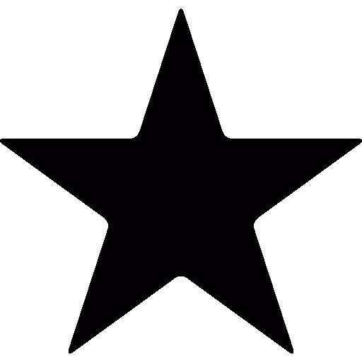
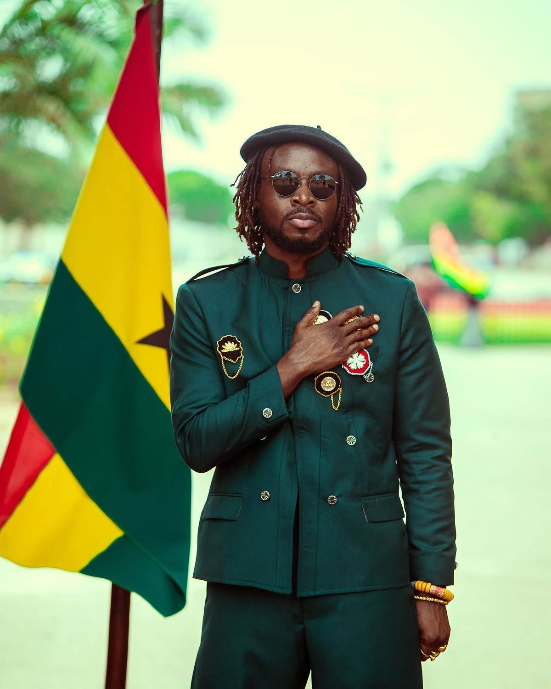

The National Symbols
of Ghana
Five enduring emblems of sovereignty, pride, and purpose — each one a chapter in the story of our nation. Select any symbol below to explore its full history, meaning, and civic significance.

The National Flag
Designed by Theodosia Okoh and raised at midnight on 6 March 1957 — the red, gold, and green tricolour with its Black Star announced Ghana's freedom to the world.
Explore the Flag →
The Black Star
Born from Marcus Garvey's Pan-African vision, the Black Star is the Lodestar of African Freedom and Ghana's call to continental leadership.
Explore the Black Star →The Coat of Arms
The eagle, the shield, and the motto "Freedom and Justice" — an emblem of sovereignty, cultural heritage, and the founding principles of the Ghanaian state.
Explore the Coat of Arms →The National Anthem
Composed by Philip Gbeho — "God Bless Our Homeland Ghana" is a three-verse patriotic covenant calling every citizen to humility, unity, and service.
Explore the Anthem →
The National Pledge
A sacred civic covenant — recited by Ghanaians every morning in schools and at state functions, pledging loyalty, service, and the defence of Ghana's good name.
Explore the Pledge →